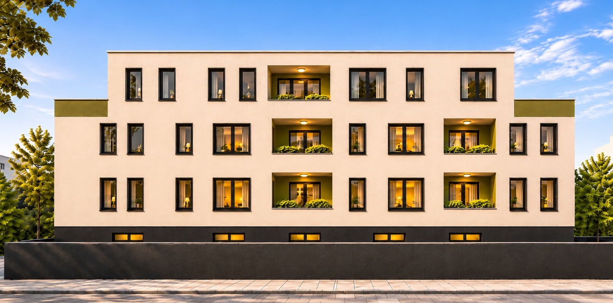
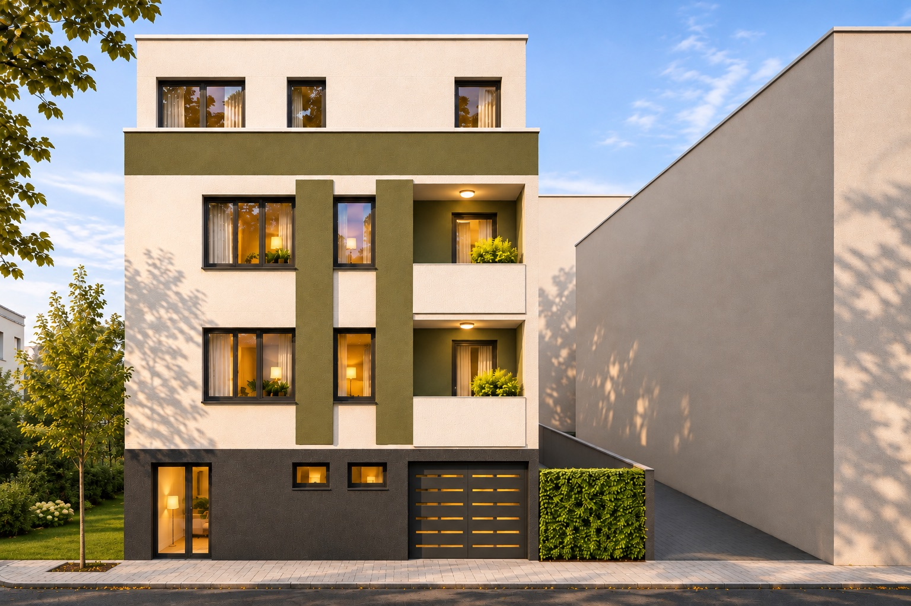

O projektu
Kompaktna zgrada, promišljeni rasporedi.
Slobodnostojeći poslovno-stambeni objekat gradi se na parceli od 513 m² u ulici Toše Jovanovića u Zrenjaninu. Ima suteren, visoko prizemlje, sprat i povučeni sprat, ravan krov, a sve etaže povezuju trokrako stepenište i lift.
Na visokom prizemlju i spratu nalazi se po četiri dvosobna apartmana sa lođom – poslovni deo objekta, namenjen smeštaju za kratkotrajni boravak. Povučeni sprat čine tri stana, od kojih dva imaju terase od oko 27 m². U suterenu su garaža, ulazni hol i tehničke prostorije.
- Lokacija
- Toše Jovanovića 30, 23000 Zrenjanin
- Spratnost
- Su+VP+1+PS
- Namena
- Poslovno-stambena (50% / 50%)
- Jedinice
- 8 apartmana + 3 stana
- Neto površina
- 962,64 m²
- Bruto površina
- 1.157,64 m²
- Površina parcele
- 513,00 m²
- Visina objekta
- 12,70 m
- Garaža
- 5 garažnih mesta u suterenu
- Parkiranje
- 7 parking mesta – 4 na parceli, 3 uz ulicu
- Zelene površine
- 20% parcele
- Katastarska parcela
- 6826, KO Zrenjanin I
- Investitor
- Promarh gradnja doo
- Projektant
- „BSN TEH GRAD” doo, Zrenjanin


Interaktivni prikaz
Zgrada po spratovima.
Kliknite na sprat na zgradi ili ga izaberite sa liste da vidite stanove i apartmane.
Spratovi
Ponuda
Svi stanovi i apartmani
* Apartmani A1–A8 su poslovni deo objekta (smeštaj za kratkotrajni boravak), a stanovi S1–S3 stambeni deo. Površine su neto, prema projektu za građevinsku dozvolu (oktobar 2026); moguće su manje izmene tokom izrade projekta za izvođenje.
Bez agencijske provizije
Zainteresovani ste za stan?
Pišite nam ili pozovite – rado ćemo vam poslati cene, raspored i uslove kupovine za jedinicu koja vas zanima.
Lokacija na mapiOstali projekti
Pogledajte i ove lokacije.
Dr Kornela Radulovića 16
Uskoro više informacija